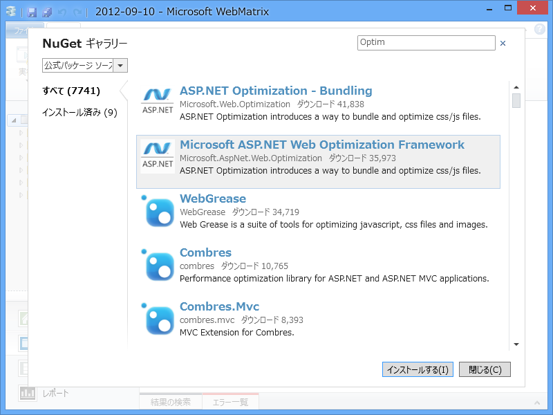
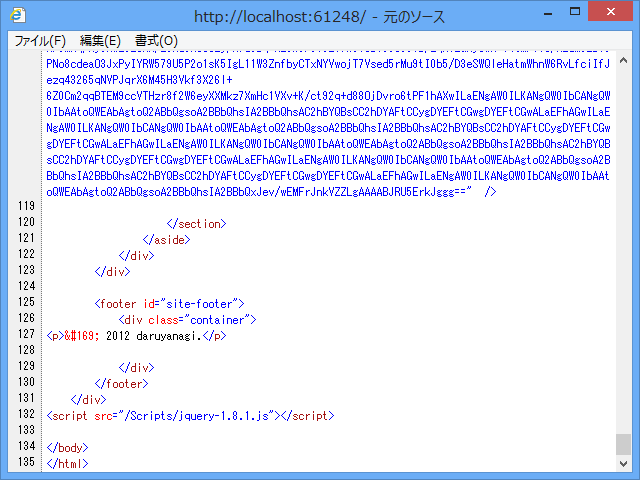
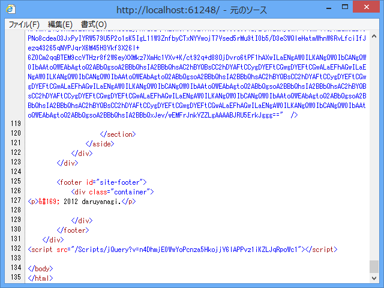
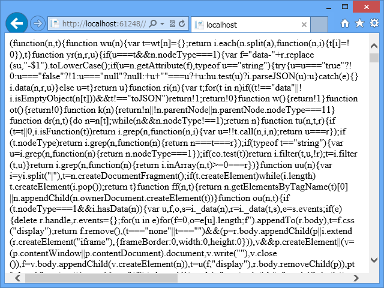
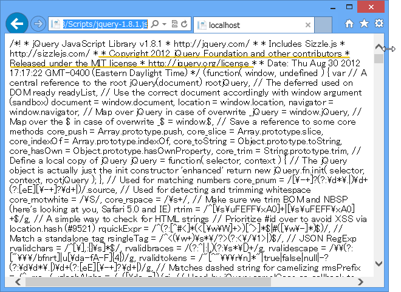

CSS / Javascript の Bunlde と Minify を WebMatrix で利用する（2）
公開日：
@chack411 さん曰く、 http://nuget.org/packages/Microsoft.AspNet.Web.Optimization を使うのが正しいそうです（ありがとうございます！）。また後日試してみましょう。
というわけで試してみたよ。
NuGet のインストール

合言葉は「Optimization」！ 検索で出てきた2番目の「Microsoft ASP.NET Web Optimization Framework」をインストールしよう。そうなんだ……前回は何も考えずに一番上をいれていたんだけど、これはどうやらディスコンみたいなんだ。
話は変わるけど、NuGet で使いにくいのは、
- どれを使うべきか
- どうやって使うのか
がわかんないことだと思う。前者は［開発終了］フラグなんかをつけられるといいと思う*1し、評価システムがあれば助かると思った。後者は NuGet パッケージのルートに Markdown ファイルを置くだけで Web ページに簡単な ReadMe を表示できるとか*2、そういう仕組みがあればいいのかなぁ、と思う。まぁ、自分の NuGet に満足な（英語の！）解説を付けていない人が言えることではないけれど。
依存関係で入ってくる「WebGrease」は、Minify *3を行うコマンドラインツールみたい。
http://kenhaines.net/post/2012/06/09/WebGrease-As-seen-in-Visual-Studio-2012.aspx
Microsoft の中の人が作ってるみたいだね。
基本的な使い方
# ~/Views/Shared/_SiteLayout.cshtml<!DOCTYPE html>
@using System.Web.Optimization // Web.config いじれば要らないかな
@{ // Script をバンドル BundleTable.Bundles.Add( new ScriptBundle("~/Scripts/jQuery") .Include("~/Scripts/jquery-{version}.js"));
// CSS をバンドル BundleTable.Bundles.Add( new StyleBundle("~/Content/Styles") .Include("~/Content/*.css"));
// BundleTable.EnableOptimizations = true; }
<html lang="@App.Language"> <head> ： @Styles.Render("~/Content/Styles") // CSS の LINK タグを出力 </head> <body> ： @Scripts.Render("~/Scripts/jQuery") // Scriptタグを出力 </body> </html>
大まかな流れは、
- System.Web.Optimization をインクルード
- BundleTable.Bundles に SciprBundle や StyleBundle をつっこむ
- Script.Render() や Style.Render() でタグを生成
ってな感じ。 Bundle には仮想 URL を割り当てて、Render() するときにそれを指定する。あと、Bundle にはスクリプトやスタイルを複数 Include() 可能。そのとき、 {version} や * みたいなワイルドカードのようなものが使えるみたい。たとえば、jQuery を NuGet で更新してバージョンをあげてもレイアウトファイルを手直ししなくていいし、指定したフォルダに新しい CSS を追加しても実行時に自動でバンドルされるので便利だな。
実際の出力と BundleTable.EnableOptimizations
で、実際の出力はどうなるかというと、 @Scripts.Render("~/Scripts/jQuery") の場合はこんな感じ。

おおー、最新版が読み込まれているぞ。けれど、 Minify まではされていない。
Minify までしてほしい場合は、
BundleTable.EnableOptimizations = true;
しておく。すると、出力はこんな感じに変わる。

スクリプトの内容はこんな感じ。

改行が飛んでいるので少しわかりにくいけれど、最適化を有効にしない場合はこんな感じ。

著作権表示などのコメントがいっぱい残っているのがわかる。「Microsoft ASP.NET Web Optimization Framework」を利用したら、こういうのを全部取って、リソースの転送量を抑えてくれるので便利！……というわけで、今回はおしまい。
ASP.NET MVC4 だとこうのも標準で入っているみたい。メイドの人が言ってた。
Microsoft.Web.Optimization で JavaScript と CSS の最適化を行う - しばやん雑記
WebMatrix は標準で Application_Start / RegisterBundles() みたいなのが標準では用意されていないけれど、なんなら自分で作ってもいいね。まぁ、そんなのが必要になるぐらいキッチリとデカいアプリケーションを書きたくなったら、自然と MVC みたいなフレームワーク＋ IDE 支援がほしくなると思う。それまでは、WebMatrix でお勉強するのもありだと思うよ。